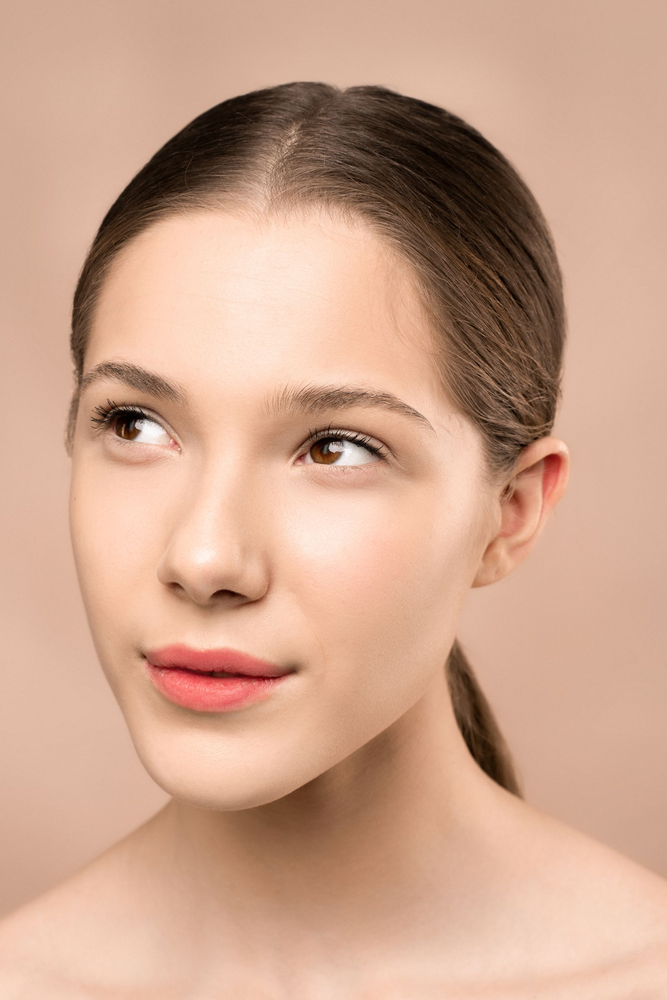
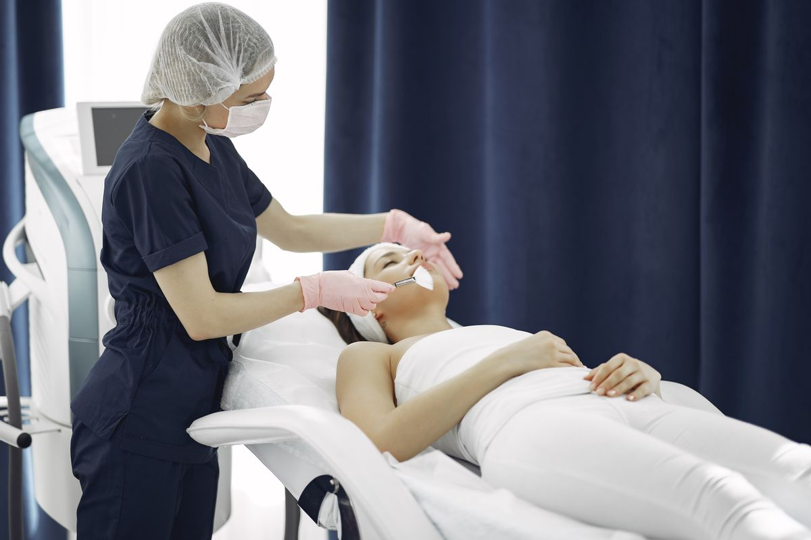
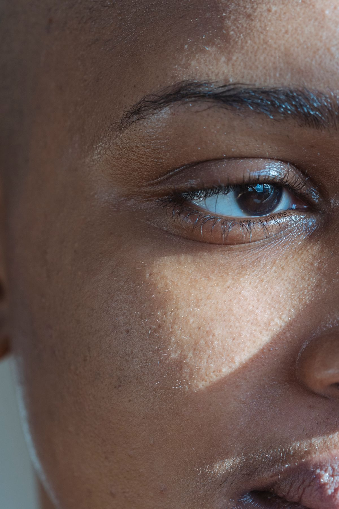
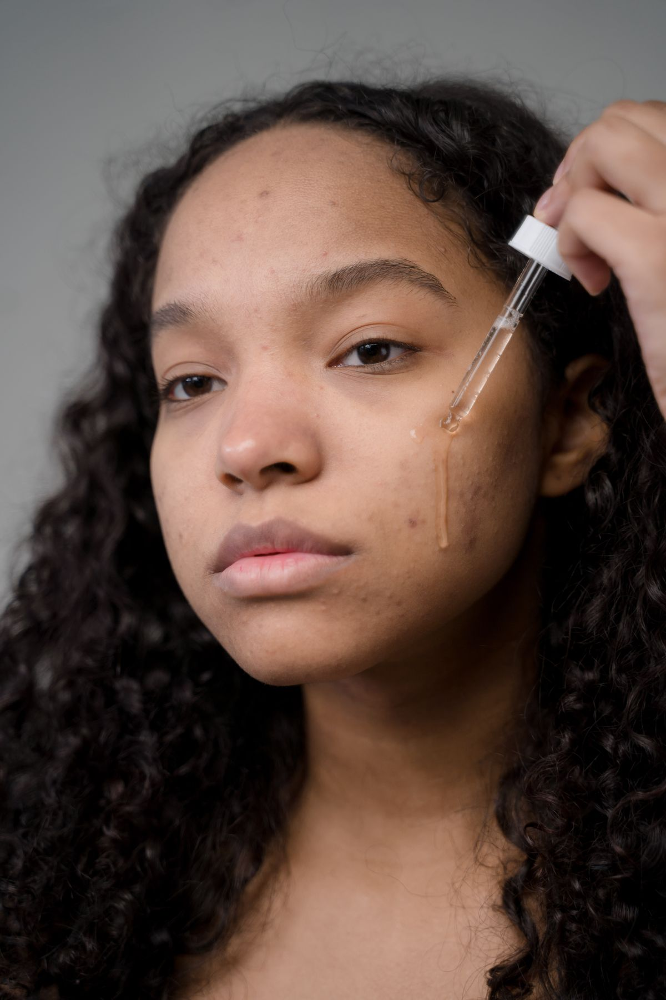
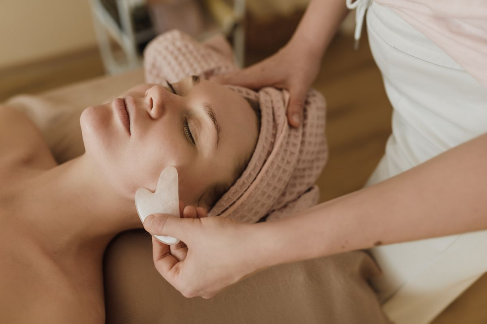

Planejamento individual
Seus objetivos e características orientam cada etapa do atendimento.
Realce sua beleza com naturalidade, sofisticação e cuidado individual. Um olhar atento para os seus traços, um plano pensado para você.


Cada rosto tem uma história. Cada pessoa, uma forma própria de se sentir bem. Por isso, o primeiro passo é entender seus objetivos e respeitar suas características.
Da avaliação ao acompanhamento, os cuidados são planejados para valorizar seus traços com atenção, harmonia e naturalidade.
Conheça os procedimentos em destaque.
A escolha começa sempre com uma avaliação individual.
A indicação de cada procedimento depende de avaliação por profissional habilitado.
Um espaço para apresentar evoluções reais,
com contexto e respeito à individualidade.



Galeria ilustrativa para demonstração comercial. As fotos não representam pacientes, tratamentos ou resultados de antes e depois.
Seus objetivos e características orientam cada etapa do atendimento.
Atenção às proporções e aos detalhes que fazem parte da sua identidade.
Um ambiente tranquilo para conversar, esclarecer dúvidas e se cuidar.
Orientações claras antes e depois, de acordo com o procedimento escolhido.
A indicação considera suas necessidades e os limites de cada tratamento.
Escuta, atenção e espaço para decidir com calma e informação.
Agende uma avaliação e conheça as possibilidades de cuidado para você.
Falar no WhatsAppAtendimento com hora marcadaUma boa decisão começa
com uma conversa clara.
É um momento para conhecer seus objetivos, conversar sobre seu histórico e avaliar as possibilidades de cuidado. As indicações e orientações são explicadas de forma individual.
O planejamento considera suas características, necessidades e expectativas. A indicação é definida após a avaliação profissional.
O tempo varia conforme o procedimento e o plano de atendimento. Essa informação é confirmada antes do agendamento.
Sim. O profissional orienta os cuidados específicos e informa como será o acompanhamento, de acordo com o procedimento realizado.
Entre em contato pelo WhatsApp para consultar horários e combinar sua avaliação. Nesta demonstração, o botão abre uma mensagem pronta para compartilhar.